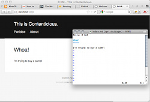

Welcome to Contenticious
Contenticious is a very easy way to build pretty web sites just by editing Markdown files in a directory structure. For example, these pages are built with its default settings and no additional magic.
It ships with some very useful helpers and is absolutely free.
Learn more and start with the guided tour!
If you are a pro, maybe you want to check its code on github.